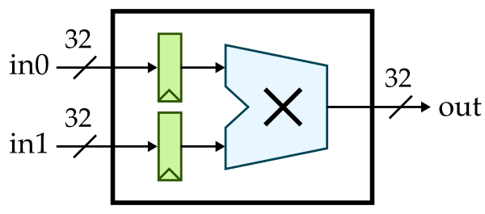
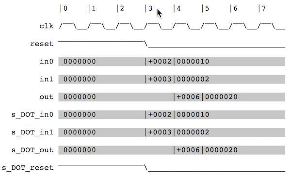
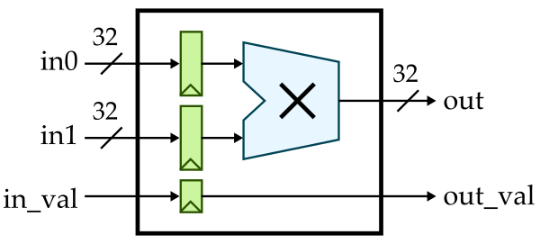

# ECE 4750 Section 1: RTL Design with Verilog
Table of Contents
- Verilog RTL for Single-Cycle Multiplier
- Verilog-Based Ad-Hoc Test for Single-Cycle Multiplier
- Python-Based Ad-Hoc Test for Single-Cycle Multiplier
- Verilog RTL for Single-Cycle Multiplier with Valid Bit
- Verilog RTL for Single-Cycle Multiplier with Streaming Interface
This discussion section serves as gentle introduction to the
basics of Verilog RTL design. You should start by logging into the
ecelinux servers using the remote access option of
your choice and then source the setup script.
% source setup-ece4750.sh
% mkdir -p $HOME/ece4750
% cd $HOME/ece4750
% git clone git@github.com:cornell-ece4750/2025F.git
% cd 2025F/sections/section1
% TOPDIR=$PWDVerilog RTL for Single-Cycle Multiplier
We will start by implementing a simple single-cycle multiplier. Whever implementing hardware, we always like start with some kind of diagram. It could be a block diagram, datapath diagram, or finite-state-machine diagram. Here is a block diagram for our single-cycle multiplier. Notice how we are using registered inputs. In this course, if we want to include registers in a block we usually prefer registered inputs instead of registered outputs.

Here is the interface for our single-cycle multiplier.
module imul_IntMulScycleV1
(
input logic clk,
input logic reset,
input logic [31:0] in0,
input logic [31:0] in1,
output logic [31:0] out
);Our single-cycle multiplier takes two 32-bit input values and produces a 32-bit output value. Notice our coding conventions. We prefix all Verilog module names with the corresponding directory path, we use CamelCase for Verilog module names, and we align all port names. We can implement this single-cycle multiplier flat (i.e., directly use behavioral modeling without instantiating any child modules) or structurally (i.e., instantiate child modules). Here is what a flat implementation might look like:
//----------------------------------------------------------------------
// Input Registers (sequential logic)
//----------------------------------------------------------------------
logic [31:0] in0_reg;
logic [31:0] in1_reg;
always @( posedge clk ) begin
if ( reset ) begin
in0_reg <= 32'b0;
in1_reg <= 32'b0;
end
else begin
in0_reg <= in0;
in1_reg <= in1;
end
end
//----------------------------------------------------------------------
// Multiplication Logic (combinational logic)
//----------------------------------------------------------------------
always @(*) begin
out = in0_reg * in1_reg;
endNote that we are using an always @(posedge clk) to
model sequential logic and an always @(*) to model
combinational logic. Always be very explicit about what part of
your design is sequential and what part is combinational.
Always use non-blocking assignments
(<=) in an always @(posedge clk) and
always use blocking assignments (=)
in an always @(*). At least when getting started, try
to avoid including too much combinational logic in your sequential
blocks. You can also include simple combinational logic directly
in an assign statement. So we could replace the
always @(*) with the following:
assign out = in0_reg * in1_reg;Here is how we might implement the two registers structurally
by instantiating the vc_ResetReg component which is
provided in vc/regs.v.
logic [31:0] in0_reg;
vc_ResetReg#(32,0) in0_reg_
(
.clk (clk),
.reset (reset),
.d (in0),
.q (in0_reg)
);
logic [31:0] in1_reg;
vc_ResetReg#(32,0) in1_reg_
(
.clk (clk),
.reset (reset),
.d (in1),
.q (in1_reg)
);We specify the register bitwidth and reset value as parameters
using the #() syntax. To use the
vc_ResetReg module you will need to add the following
to the top of your Verilog RTL file:
`include "vc/regs.v"Go ahead and implement our first single-cycle multiplier in
imul/IntMulScycleV1.v. You can implement the
registers either flat or structurally, and you can implement the
actual multiplication logic either using an
always @(*) or an assign statement.
Verilog-Based Ad-Hoc Test for Single-Cycle Multiplier
Now that we have implemented our single-cycle multiplier, we
need to test it. Let’s start by trying the Verilog-based ad-hoc
test harness located in imul/imul-v1-adhoc-test.v.
Take a few minutes to look at this test harness.
`include "imul/IntMulScycleV1.v"
module top;
// Clocking
logic clk = 1;
always #5 clk = ~clk;
// Instaniate the design under test
logic reset = 1;
logic [31:0] in0;
logic [31:0] in1;
logic [31:0] out;
// Instantiate the multiplier
imul_IntMulScycleV1 imul
(
.clk (clk),
.reset (reset),
.in0 (in0),
.in1 (in1),
.out (out)
);
// Simulate the integer multiplier
initial begin
// Dump waveforms
$dumpfile("imul-v1-adhoc-test.vcd");
$dumpvars;
// Reset
#11;
reset = 1'b0;
// Cycle 1
in0 = 32'h02;
in1 = 32'h03;
#10;
$display( " cycle = 1: in0 = %x, in1 = %x, out = %x", in0, in1, out );
...
$finish;
end
endmoduleThe test harness includes some logic to generate a clock, instantiates the design under test, and uses an initial block to set the input signals and display the output signals. Icarus Verilog is an open-source Verilog simulator. You can compile and run this test harness along with our single-cycle multiplier using Icarus Verilog as follows:
% mkdir -p $TOPDIR/build
% cd $TOPDIR/build
% iverilog -g2012 -I .. -o imul-v1-adhoc-test ../imul/imul-v1-adhoc-test.v
% ./imul-v1-adhoc-testNotice how we are building our simulator in a separate
build directory to keep generated files separate from
our source files.
Python-Based Ad-Hoc Test for Single-Cycle Multiplier
The Icarus Verilog simulator is quite slow, only supports a pretty old version of Verilog, and does not produce terribly helpful error messages. Furthermore, writing test benches in Verilog is very tedious and not particularly fun. In this course, we will be using the Verilator simulator which is very fast, supports some of SystemVerilog, and produces much better error messages. In addition we will be using Python to write all of our test benches. Python is fun!
We need to write a PyMTL3 wrapper for every component we want
to test using Python. Take a look at the PyMTL3 wrapper for our
single-cycle multiplier located in
imul/IntMulScycleV1.py:
from pymtl3 import *
from pymtl3.passes.backends.verilog import *
class IntMulScycleV1( VerilogPlaceholder, Component ):
def construct( s ):
s.in0 = InPort ( 32 )
s.in1 = InPort ( 32 )
s.out = OutPort( 32 )The PyMTL3 wrapper is a Python class that inherits from the
VerilogPlaceholder and Component base
classes. It includes one construct method which
instantiates all of the ports. The port names and bitwidths in the
wrapper should exactly match the port names in the Verilog module.
PyMTL3 can figure out if there is a clk and
reset port automatically.
Now let’s look at the Python test bench located in
imul/imul-v1-adhoc-test.py:
from sys import argv
from pymtl3 import *
from pymtl3.passes.backends.verilog import *
from IntMulScycleV1 import IntMulScycleV1
# Get list of input values from command line
in0_values = [ int(x,0) for x in argv[1::2] ]
in1_values = [ int(x,0) for x in argv[2::2] ]
# Create and elaborate the model
model = IntMulScycleV1()
model.elaborate()
# Apply the Verilog import passes and the default pass group
model.apply( VerilogPlaceholderPass() )
model = VerilogTranslationImportPass()( model )
model.apply( DefaultPassGroup(linetrace=True,textwave=True,vcdwave="imul-v1-adhoc-test") )
# Reset simulator
model.sim_reset()
# Apply input values and display output values
for in0_value,in1_value in zip(in0_values,in1_values):
# Write input value to input port
model.in0 @= in0_value
model.in1 @= in1_value
model.sim_eval_combinational()
# Tick simulator one cycle
model.sim_tick()
# Tick simulator three more cycles and print text wave
model.sim_tick()
model.sim_tick()
model.sim_tick()
model.print_textwave()The test bench gets some input values from the command line, instantiates the design under test, applies some PyMLT3 passes, and then runs a simulation by setting the input values and displaying the output value.
You can run this test harness along with our single-cycle multiplier as follows:
% cd $TOPDIR/build
% python ../imul/imul-v1-adhoc-test.py 2 3 16 2Notice how we are still building our simulator in a separate
build directory to keep generated files separate from
our source files. The PyMTL3 framework takes care of using
Verilator to compile your Verilog RTL before running the Python
test bench. The ad-hoc test will display a line trace:
1r 00000000|00000000(00000000 00000000)00000000
2r 00000000|00000000(00000000 00000000)00000000
3: 00000002|00000003(00000000 00000000)00000000
4: 00000010|00000002(00000002 00000003)00000006
5: 00000010|00000002(00000010 00000002)00000020
6: 00000010|00000002(00000010 00000002)00000020
7: 00000010|00000002(00000010 00000002)00000020A line trace shows the state of the design with fixed width fields and exactly one line per cycle. You can see the input values 2,3 being sent to the multiplier on cycle 3 and the corresponding result produced on cycle 4. Take a closer look at the line-tracing code which is in the Verilog RTL to see how this line trace is produced before continuing.
The ad-hoc test also displays a text-based waveform. The line trace and text-based waveform are isomorphic; they are showing the same information in two different ways.

Finally, the ad-hoc test also generates a VCD file that enables much more detailed waveform visualization using gtkwave.
% cd $TOPDIR/build
% gtkwave imul-v1-adhoc-test.vcdVerilog RTL for Single-Cycle Multiplier with Valid Bit
Now that we know the basics of Verilog RTL modeling and how to simulate these models, let’s improve our multiplier by adding support for a valid bit. A valid bit will enable the multiplier to know when valid data is available at the input and to pass this information on to the output. The hardware we wish to implement looks like this:

Here is the interface for our single-cycle multiplier with valid bit:
module imul_IntMulScycleV2
(
input logic clk,
input logic reset,
input logic in_val,
input logic [31:0] in0,
input logic [31:0] in1,
output logic out_val,
output logic [31:0] out
);Copy your implementation from
imul/IntMulScycleV1.v into
imul/IntMulScycvleV2.v and modify it so that it
correctly implements the valid bit. Then use the following ad-hoc
test to verify it functions correctly. Look carefully to ensure
the valid bit at the output is only high when the output data is
indeed valid.
% cd $TOPDIR/build
% python ../imul/imul-v2-adhoc-test.py 2 3 16 2Verilog RTL for Single-Cycle Multiplier with Streaming Interface
The V1 and V2 single-cycle multipliers are latency-sensitive. This means if we want to develop a component that uses these multipliers, our component’s logic would need to be hard-coded to expect the output value one cycle after we set the input values. If we wanted to swap in a different multiplier implementation (e.g., a multi-cycle iterative implementation or a pipelined implementation) we would need to rewrite all of the logic in our component. Testing comopnents that are latency-sensititive is also cumbersome since we need to carefully verify the exact expected outputs every cycle.
In this course, we will make extenstive use of latency-insensitive streaming interfaces. Such interfaces use a val/rdy microprotocol which will enable other logic to always function correctly regardless of how many cycles a component requires.
VAL/RDY MICROPROTOCOL: Assume we have a producer that wishes to send a message to a consumer using the val/rdy micro-protocol. At the beginning of the cycle, the producer determines if it has a new message to send to the consumer. If so, it sets the message bits appropriately and then sets the valid signal high. Also at the beginning of the cycle, the consumer determines if it is able to accept a new message from the producer. If so, it sets the ready signal high. At the end of the cycle, the producer and consumer can independently AND the valid and ready signals together; if both signals are true then the message is considered to have been sent from the producer to the consumer and both sides can update their internal state appropriately. Otherwise, we will try again on the next cycle. To avoid long combinational paths and/or combinational loops, we should avoid making the valid signal depend on the ready signal or the ready signal depend on the valid signal. If you absolutely must, you can make the ready signal depend on the valid signal (e.g., in an arbiter) but it is considered very bad practice to make the valid signal depend on the ready signal. As long as you adhere to this val/rdy microprotocol, composing modules via the stream interfaces should not cause significant timing issue
Here is how we can implement a single-cycle multiplier with a latency-insenstiive streaming interface:

Here is the interface for this single-cycle multiplier:
module imul_IntMulScycleV3
(
input logic clk,
input logic reset,
input logic istream_val,
output logic istream_rdy,
input logic [63:0] istream_msg,
output logic ostream_val,
input logic ostream_rdy,
output logic [31:0] ostream_msg
);Notice that we have a valid signal (val), a ready
signal (rdy), and a message (msg)
associated with both the input stream and the output stream. We
have provided the implementation of this multiplier for you. Take
a look in imul/IntMulScycleV3.v. The PyMTL3 wrapper
is located in imul/IntMulScycleV3.py and looks like
this:
from pymtl3 import *
from pymtl3.passes.backends.verilog import *
from pymtl3.stdlib.stream.ifcs import IStreamIfc, OStreamIfc
class IntMulScycleV3( VerilogPlaceholder, Component ):
def construct( s ):
s.istream = IStreamIfc( Bits64 )
s.ostream = OStreamIfc( Bits32 )Once we start using streaming interfaces we can take advantage
of stream sources to send messages to our design and stream sinks
to accept messages from our design and check that they are
correct. Here is our new test harness in
imul/imul-v3-adhoc-test.py:
class TestHarness( Component ):
def construct( s, imsgs, omsgs ):
# Instantiate models
s.src = StreamSourceFL( Bits64, msgs=imsgs, initial_delay=0, interval_delay=0 )
s.sink = StreamSinkFL ( Bits32, msgs=omsgs, initial_delay=0, interval_delay=0 )
s.imul = IntMulScycleV3()
# Connect
s.src.ostream //= s.imul.istream
s.imul.ostream //= s.sink.istream
def done( s ):
return s.src.done() and s.sink.done()
def line_trace( s ):
return s.src.line_trace() + " > " + s.imul.line_trace() + " > " + s.sink.line_trace()The test harness instantiates a stream source, multiplier, and stream sink. It then hooks the streaming interfaces up. Let’s try it out.
% cd $TOPDIR/build
% python ../imul/imul-v3-adhoc-test.py 2 3 16 2The line trace looks very similar to our previous version, but
to really see the difference we need to introduce some
back-pressure into our design where the consumer is not
ready. You can do this by changing the initial_delay
and interval_delay for the stream sink. Experiment
with different values and observe how the back-pressure changes
the line-trace. For streaming interfaces, the line trace works
like this:
.= val/rdy interface is not valid and not ready#= val/rdy interface is valid but not ready- space = val/rdy interface is not valid and ready
- message is shown when it is actually transferred across interface
You will be implementing two multi-cycle iterative multipliers in lab 1 which make use of stream interfaces. We will then be able to use these multipliers in the processor you design in lab 2. If the processor correctly adheres to the val/rdy micro-protocol then it will function correctly regardless of the latency of the multiplier.